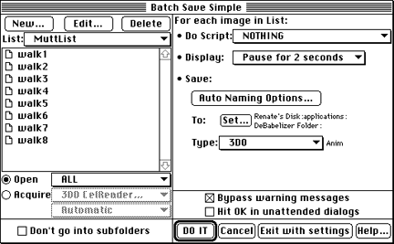
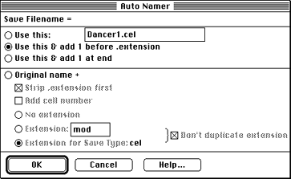
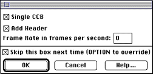

If you're converting a series of frames, click on New, then create the batch list using the dialog that appears.
If you're converting an animation or QuickTime movie, create a batch list consisting of a single file.
Note: You can follow the corresponding steps to create a SANM.

Figure 1: Dialog for saving a simple animation.
Note: When creating an animation from a list of files, make
sure to supply a single new name.

Figure 2: Dialog for specifying auto-naming options.
If you've selected Anim, the following dialog appears next:

Figure 3: Dialog options for a 3DO animation.
If you select Single CCB, the CCM saves one CCB for all frames in the animation. This is usually preferable for uncoded cels.
If you select Add Header, you can then determine the frame rate.
Note: If the dialog has been used before and the "Skip this box next time" box was checked, hold down the Option key while clicking DO IT to override.
Next, you are prompted for the cel type. You will see the CelWriter dialog.

Figure 4: CelWriter
You can currently save 16-bit and 8-bit uncoded cels and 6-bit, 4-bit, 2-bit, and 1-bit coded cels with the CelWriter CCM. Note that 8-bit uncoded cels are rarely desirable, since you have no control over the palette.
Note: To save an 8-bit coded cel, use the Coded-8 CCM
discussed in Creating coded cels with
the 3DO CelWriter.
- DeBabelizer saves the first file, reporting progress in a dialog.
- When DeBabelizer gets to the second file, you are prompted for a new name.